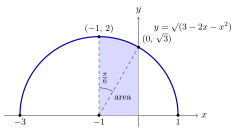
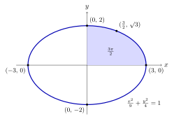

8.4 Trigonometric Substitutions¶
Guiding question
Square roots of quadratic expressions, such as \(\sqrt{25-x^2}\), \(\sqrt{x^2+4}\) and \(\sqrt{x^2-16}\), resist the methods of the earlier sections: no ordinary substitution \(u=\dots\) removes the root. The trigonometric identities of Section 8.3 do remove it. The Pythagorean identities say that \(1-\sin^2\theta=\cos^2\theta\), \(1+\tan^2\theta=\sec^2\theta\) and \(\sec^2\theta-1=\tan^2\theta\), so if \(x\) is replaced by \(a\sin\theta\), \(a\tan\theta\) or \(a\sec\theta\), the expression under the root becomes a perfect square. The square root then is a trigonometric function, up to an absolute value, and the new integral is one of the trigonometric integrals we already know. The work in this section is in the details: which range of \(\theta\) makes the substitution legitimate, what the absolute value does (it is the source of the commonest error), and how to return from \(\theta\) to \(x\) with a reference triangle. These are all proved below, so that none of them has to be taken on trust. We finish with areas of circles and ellipses, with an arc length, and with the question of when a trigonometric substitution is not the best method.
By the end of this section you should be able to:
-
choose the substitution \(x=a\sin\theta\), \(x=a\tan\theta\) or \(x=a\sec\theta\) for \(\sqrt{a^2-x^2}\), \(\sqrt{a^2+x^2}\) or \(\sqrt{x^2-a^2}\), and for the powers \((a^2\pm x^2)^{n/2}\) and \((x^2-a^2)^{n/2}\);
-
prove that each substitution is legitimate: the range of \(\theta\), why the substitution is one-to-one and onto, and what the square root becomes, including the absolute value;
-
return to \(x\) with a reference triangle and check the back-substitution, treating \(x\ge a\) and \(x\le-a\) separately for \(\sqrt{x^2-a^2}\);
-
complete the square first when the quadratic is shifted;
-
evaluate definite integrals by changing the limits, and say when ignoring the absolute value gives a wrong answer;
-
compute the area of a circle and of an ellipse, and an arc length, with a trigonometric substitution;
-
decide when an ordinary substitution or a formula of Section 8.1 is faster, and recognize answers that differ by a constant.
The idea, and the three substitutions¶
Let \(a>0\). The three expressions \(a^2-x^2\), \(a^2+x^2\) and \(x^2-a^2\) are matched with the three Pythagorean identities of Theorem 8.3.1(1):
Taking the square root of each side suggests the table below. The ranges of \(\theta\) in it are not decoration; Theorem 8.4.1 shows that they are exactly what makes the substitutions correct.
| Expression | Substitution | Range of \(\theta\) | The root becomes |
|---|---|---|---|
| \(\sqrt{a^2-x^2}\) | \(x=a\sin\theta\) | \(-\frac\pi2\le\theta\le\frac\pi2\) | \(a\cos\theta\) |
| \(\sqrt{a^2+x^2}\) | \(x=a\tan\theta\) | \(-\frac\pi2<\theta<\frac\pi2\) | \(a\sec\theta\) |
| \(\sqrt{x^2-a^2}\), \(x\ge a\) | \(x=a\sec\theta\) | \(0\le\theta<\frac\pi2\) | \(a\tan\theta\) |
| \(\sqrt{x^2-a^2}\), \(x\le-a\) | \(x=a\sec\theta\) | \(\frac\pi2<\theta\le\pi\) | \(-a\tan\theta\) |
Theorem 8.4.1: The three substitutions are legitimate
Let \(a>0\).
(1) Sine. \(g(\theta)=a\sin\theta\) maps \(\left[-\frac\pi2,\frac\pi2\right]\) one-to-one onto \([-a,a]\), with inverse \(x\mapsto\sin^{-1}\frac xa\), and \(\sqrt{a^2-g(\theta)^2}=a\cos\theta\).
(2) Tangent. \(g(\theta)=a\tan\theta\) maps \(\left(-\frac\pi2,\frac\pi2\right)\) one-to-one onto \((-\infty,\infty)\), with inverse \(x\mapsto\tan^{-1}\frac xa\), and \(\sqrt{a^2+g(\theta)^2}=a\sec\theta\).
(3) Secant. \(g(\theta)=a\sec\theta\) maps \(\left[0,\frac\pi2\right)\) one-to-one onto \([a,\infty)\) and \(\left(\frac\pi2,\pi\right]\) one-to-one onto \((-\infty,-a]\). On both pieces the inverse is \(x\mapsto\cos^{-1}\frac ax\). Moreover \(\sqrt{g(\theta)^2-a^2}=a\lvert\tan\theta\rvert\), which equals \(a\tan\theta\) on \(\left[0,\frac\pi2\right)\) and \(-a\tan\theta\) on \(\left(\frac\pi2,\pi\right]\).
In each case \(g\) is differentiable, and \(g'(\theta)\ne0\) on the open interval of \(\theta\).
Proof. (1) Sine. Since \(g'(\theta)=a\cos\theta>0\) for \(-\frac\pi2<\theta<\frac\pi2\), \(g\) is strictly increasing on \(\left[-\frac\pi2,\frac\pi2\right]\) (a continuous function with a positive derivative inside is strictly increasing), hence one-to-one. Its values at the ends are \(g\left(-\frac\pi2\right)=-a\) and \(g\left(\frac\pi2\right)=a\), so by the Intermediate Value Theorem \(g\) takes every value in \([-a,a]\), and no other. The inverse satisfies \(\sin\theta=\frac xa\) with \(\theta\) in \(\left[-\frac\pi2,\frac\pi2\right]\), which is the definition of \(\sin^{-1}\frac xa\). For the root, \(a^2-a^2\sin^2\theta=a^2\cos^2\theta\) and \(\sqrt{a^2\cos^2\theta}=a\lvert\cos\theta\rvert=a\cos\theta\), because \(\cos\theta\ge0\) on \(\left[-\frac\pi2,\frac\pi2\right]\).
(2) Tangent. Here \(g'(\theta)=a\sec^2\theta>0\), so \(g\) is strictly increasing on \(\left(-\frac\pi2,\frac\pi2\right)\). As \(\theta\to\frac\pi2^-\) we have \(\tan\theta\to\infty\) and as \(\theta\to-\frac\pi2^+\) we have \(\tan\theta\to-\infty\), so by the Intermediate Value Theorem \(g\) takes every real value. The inverse is \(\tan^{-1}\frac xa\) by definition. For the root, \(a^2+a^2\tan^2\theta=a^2\sec^2\theta\), and \(\sqrt{a^2\sec^2\theta}=a\lvert\sec\theta\rvert=a\sec\theta\), because \(\cos\theta>0\) and so \(\sec\theta>0\) on \(\left(-\frac\pi2,\frac\pi2\right)\).
(3) Secant. We have \(g'(\theta)=a\sec\theta\tan\theta\). On \(\left(0,\frac\pi2\right)\) both \(\sec\theta\) and \(\tan\theta\) are positive, so \(g'>0\). On \(\left(\frac\pi2,\pi\right)\) both are negative (cosine and sine have opposite signs there, so \(\cos\theta<0<\sin\theta\) gives \(\sec\theta<0\) and \(\tan\theta<0\)), so again \(g'=a\sec\theta\tan\theta>0\). Hence \(g\) is strictly increasing on each piece. On \(\left[0,\frac\pi2\right)\) it starts at \(g(0)=a\) and tends to \(\infty\) as \(\theta\to\frac\pi2^-\), so by the Intermediate Value Theorem it takes every value in \([a,\infty)\). On \(\left(\frac\pi2,\pi\right]\) it tends to \(-\infty\) as \(\theta\to\frac\pi2^+\) (because \(\cos\theta\to0^-\)) and ends at \(g(\pi)=-a\), so it takes every value in \((-\infty,-a]\). For the inverse, \(x=a\sec\theta\) means \(\cos\theta=\frac ax\). If \(x\ge a\) then \(\frac ax\in(0,1]\) and the only solution in \(\left[0,\frac\pi2\right)\) is \(\cos^{-1}\frac ax\) (cosine is one-to-one on \([0,\pi]\), and \(\cos^{-1}\) takes values in \([0,\pi]\)); if \(x\le-a\) then \(\frac ax\in[-1,0)\) and \(\cos^{-1}\frac ax\in\left(\frac\pi2,\pi\right]\). Finally, \(a^2\sec^2\theta-a^2=a^2\tan^2\theta\), so \(\sqrt{g^2-a^2}=a\lvert\tan\theta\rvert\), and \(\tan\theta\ge0\) on \(\left[0,\frac\pi2\right)\) while \(\tan\theta<0\) on \(\left(\frac\pi2,\pi\right]\) except at \(\theta=\pi\), where it is \(0\). So \(\lvert\tan\theta\rvert=\tan\theta\) on the first piece and \(-\tan\theta\) on the second. ◻ ∎
Powers of the roots
For an integer \(n\) we write \((a^2-x^2)^{n/2}\) for \(\left(\sqrt{a^2-x^2}\right)^n\), and similarly for the other two forms. Then Theorem 8.4.1 gives at once, for example, \((a^2-x^2)^{3/2}=a^3\cos^3\theta\), \((a^2+x^2)^{5/2}=a^5\sec^5\theta\), \((a^2+x^2)^{-3/2}=a^{-3}\cos^3\theta\) and, for \(x\ge a\), \((x^2-a^2)^{3/2}=a^3\tan^3\theta\). For odd \(n\) these are the cases of interest; for even \(n\) the expression is a polynomial or rational function and no root is present.
Returning to \(x\): the reference triangles¶
After integrating in \(\theta\) we must return to \(x\). The values of \(\sin\theta\), \(\cos\theta\), \(\tan\theta\) and the rest in terms of \(x\) are read from a right triangle in which \(\theta\) is an angle, as in Figures 1 to 3. Theorem 8.4.2 says exactly what the triangles say, and adds the signs when \(x\) is negative, where a triangle alone can mislead.
Theorem 8.4.2: Back-substitution
Let \(a>0\) and let \(\theta=h(x)\) be the inverse function of Theorem 8.4.1.
(1) Sine, \(-a\le x\le a\), \(\theta=\sin^{-1}\frac xa\): \(\;\sin\theta=\dfrac xa\) and \(\cos\theta=\dfrac{\sqrt{a^2-x^2}}a\). For \(-a<x<a\) also \(\tan\theta=\dfrac x{\sqrt{a^2-x^2}}\).
(2) Tangent, all \(x\), \(\theta=\tan^{-1}\frac xa\): \(\;\tan\theta=\dfrac xa\), \(\sec\theta=\dfrac{\sqrt{a^2+x^2}}a\), \(\cos\theta=\dfrac a{\sqrt{a^2+x^2}}\) and \(\sin\theta=\dfrac x{\sqrt{a^2+x^2}}\).
(3) Secant, \(\lvert x\rvert\ge a\), \(\theta=\cos^{-1}\frac ax\): \(\;\sec\theta=\dfrac xa\), \(\cos\theta=\dfrac ax\) and \(\sin\theta=\dfrac{\sqrt{x^2-a^2}}{\lvert x\rvert}\). Moreover \(\tan\theta=\dfrac{\sqrt{x^2-a^2}}a\) if \(x\ge a\), and \(\tan\theta=-\dfrac{\sqrt{x^2-a^2}}a\) if \(x\le-a\).
Proof. (1) By definition of \(\theta=\sin^{-1}\frac xa\) we have \(\sin\theta=\frac xa\). By Theorem 8.4.1(1), \(a\cos\theta=\sqrt{a^2-x^2}\), hence \(\cos\theta=\frac{\sqrt{a^2-x^2}}a\). Dividing, \(\tan\theta=\frac{\sin\theta}{\cos\theta}=\frac{x/a}{\sqrt{a^2-x^2}/a}=\frac x{\sqrt{a^2-x^2}}\) (defined when \(\cos\theta\ne0\), that is \(\lvert x\rvert<a\)).
(2) By definition \(\tan\theta=\frac xa\). By Theorem 8.4.1(2), \(a\sec\theta=\sqrt{a^2+x^2}\), so \(\sec\theta=\frac{\sqrt{a^2+x^2}}a\) and \(\cos\theta=\frac a{\sqrt{a^2+x^2}}\). Then \(\sin\theta=\tan\theta\cos\theta=\frac xa\cdot\frac a{\sqrt{a^2+x^2}}=\frac x{\sqrt{a^2+x^2}}\).
(3) By definition \(\cos\theta=\frac ax\), which says \(\sec\theta=\frac xa\). Now \(\theta\in[0,\pi]\), and \(\sin\theta\ge0\) there. From \(\sin^2\theta=1-\cos^2\theta=1-\frac{a^2}{x^2}=\frac{x^2-a^2}{x^2}\) and \(\sin\theta\ge0\) we get \(\sin\theta=\frac{\sqrt{x^2-a^2}}{\lvert x\rvert}\). Therefore \(\tan\theta=\frac{\sin\theta}{\cos\theta}=\frac{\sqrt{x^2-a^2}}{\lvert x\rvert}\cdot\frac xa\), and \(\frac x{\lvert x\rvert}\) is \(1\) for \(x\ge a\) and \(-1\) for \(x\le-a\). This gives the two signs. ◻ ∎
Figure 1. The triangle for \(x=a\sin\theta\): hypotenuse \(a\), opposite side \(x\), adjacent side \(\sqrt{a^2-x^2}\). Drawn with \(a=5\), \(x=3\), so \(\sin\theta=\frac35\) and \(\theta\approx36.87^\circ\).
Figure 2. The triangle for \(x=a\tan\theta\): adjacent side \(a\), opposite side \(x\), hypotenuse \(\sqrt{a^2+x^2}\). Drawn with \(a=4\), \(x=3\), so \(\tan\theta=\frac34\) and \(\sec\theta=\frac54\).
Figure 3. The triangles for \(x=a\sec\theta\). Left: \(x\ge a\), an acute angle \(\theta\) with \(\cos\theta=\frac ax\) (drawn with \(a=3\), \(x=5\)). Right: \(x\le-a\), an obtuse angle \(\theta\) between \(\frac\pi2\) and \(\pi\), with \(\cos\theta=\frac ax<0\) (drawn with \(a=3\), \(x=-5\), \(\theta\approx126.87^\circ\)). The reference triangle has the sides \(a\), \(\lvert x\rvert\), \(\sqrt{x^2-a^2}\) in both cases, but \(\tan\theta\) is negative on the right.
A triangle shows sizes and not signs
The triangles show the lengths of the sides. When \(x<0\) the signs come from Theorem 8.4.2. For the secant substitution with \(x\le-a\), the angle \(\theta\) is obtuse, \(\cos\theta=\frac ax<0\) and \(\tan\theta=-\frac{\sqrt{x^2-a^2}}a<0\). Reading \(\tan\theta=+\frac{\sqrt{x^2-a^2}}a\) from the acute triangle on the left of Figure 3 is wrong when \(x\le-a\).
The substitution rule for the new variable¶
We now justify the way the substitution is used: integrate in \(\theta\), then replace \(\theta\) by the inverse function of \(x\).
Theorem 8.4.3: The trigonometric substitution method
Let \(g\) be a differentiable one-to-one function from an open interval \(J\) onto an open interval \(I\), with \(g'(\theta)\ne0\) for all \(\theta\) in \(J\), and let \(h=g^{-1}:I\to J\) be its inverse function. Let \(f\) be continuous on \(I\), and let \(G\) be an antiderivative of \(f(g(\theta))\,g'(\theta)\) on \(J\). Then \(F(x)=G(h(x))\) is an antiderivative of \(f\) on \(I\):
This applies to \(x=a\sin\theta\) on \(J=\left(-\frac\pi2,\frac\pi2\right)\), \(I=(-a,a)\); to \(x=a\tan\theta\) on \(J=\left(-\frac\pi2,\frac\pi2\right)\), \(I=(-\infty,\infty)\); and to \(x=a\sec\theta\) on \(J=\left(0,\frac\pi2\right)\), \(I=(a,\infty)\), or on \(J=\left(\frac\pi2,\pi\right)\), \(I=(-\infty,-a)\).
Proof. Since \(g\) is differentiable with \(g'\ne0\) on \(J\) and \(g\) is a bijection of \(J\) onto \(I\) (in our three cases it is strictly increasing, by Theorem 8.4.1), the derivative rule for inverse functions of Calculus I says that \(h\) is differentiable on \(I\) and \(h'(x)=\frac1{g'(h(x))}\). Differentiating \(x=g(h(x))\) gives the same identity: \(1=g'(h(x))h'(x)\). By the Chain Rule, for every \(x\) in \(I\),
because \(g(h(x))=x\) and \(g'(h(x))h'(x)=1\). The three cases listed are the open intervals of Theorem 8.4.1, on each of which \(g'=a\cos\theta\), \(a\sec^2\theta\) or \(a\sec\theta\tan\theta\) is positive. ◻ ∎
Why only open intervals. At \(\theta=\pm\frac\pi2\) the sine substitution has \(g'=0\) and \(h'(x)=\frac1{g'(h(x))}\) would be undefined at \(x=\pm a\) (indeed \(\sin^{-1}\frac xa\) has a vertical tangent there). This does not affect the answer: the antiderivative found on \((-a,a)\) is the same formula, and for definite integrals we use Theorem 8.4.10 below, which allows the end points.
Procedure 8.4.4: Trigonometric substitution
-
Look for \(\sqrt{a^2-x^2}\), \(\sqrt{a^2+x^2}\) or \(\sqrt{x^2-a^2}\) (or a power \((\cdot)^{n/2}\)). If the quadratic is shifted, complete the square first (Theorem 8.4.8). Ask whether an ordinary substitution or a formula of Section 8.1 is simpler.
-
Choose the substitution from the table, with its range of \(\theta\). Replace \(dx\) by \(g'(\theta)\,d\theta\) and the root by the trigonometric expression of Theorem 8.4.1, keeping the sign.
-
Simplify and integrate in \(\theta\), using Sections 8.1 to 8.3.
-
Return to \(x\) with Theorem 8.4.2 (the triangle, with the signs).
-
Check by differentiating the answer. For a definite integral either return to \(x\) or change the limits (Theorem 8.4.10) and check that the new limits lie in the range of \(\theta\).
Worked examples: sine, tangent and secant¶
Example 8.4.5: The sine substitution
Find \(\displaystyle\int\frac{\sqrt{25-x^2}}{x^2}\,dx\) on \(0<x<5\) (the same formula holds on \(-5<x<0\)).
Solution. The root is \(\sqrt{5^2-x^2}\), so \(a=5\) and we use \(x=5\sin\theta\) with \(0<\theta<\frac\pi2\) (the range \(-\frac\pi2<\theta<\frac\pi2\) of the table, restricted to \(x>0\)). Then \(dx=5\cos\theta\,d\theta\) and, by Theorem 8.4.1(1), \(\sqrt{25-x^2}=5\cos\theta\). Substituting,
With \(\cot^2\theta=\csc^2\theta-1\) (Theorem 8.3.1(1)) and \(\int\csc^2\theta\,d\theta=-\cot\theta\) (formula (6) of Section 8.1),
Back to \(x\). By Theorem 8.4.2(1), \(\theta=\sin^{-1}\frac x5\) and \(\cot\theta=\frac{\cos\theta}{\sin\theta}=\frac{\sqrt{25-x^2}/5}{x/5}=\frac{\sqrt{25-x^2}}x\). Hence
Check by differentiating. For the first term, \(\frac{d}{dx}\left[-\frac{\sqrt{25-x^2}}x\right]=-\frac{\frac{-x}{\sqrt{25-x^2}}\cdot x-\sqrt{25-x^2}}{x^2}=\frac{x^2+(25-x^2)}{x^2\sqrt{25-x^2}}=\frac{25}{x^2\sqrt{25-x^2}}\) (quotient rule, then a common denominator). The second term gives \(-\frac1{\sqrt{25-x^2}}\) (Theorem 8.1.6). The sum is \(\frac{25-x^2}{x^2\sqrt{25-x^2}}=\frac{\sqrt{25-x^2}}{x^2}\), the integrand.
Why it also holds on \(-5<x<0\). Both sides are defined there. The same steps with \(-\frac\pi2<\theta<0\) give \(\cot\theta=\frac{\sqrt{25-x^2}}x<0\), in agreement with \(\cos\theta>0\), \(\sin\theta<0\), and the check by differentiation does not depend on the sign of \(x\).
Example 8.4.6: The tangent substitution
Find \(\displaystyle\int\frac{x^2}{(x^2+4)^{3/2}}\,dx\).
Solution. Here \(x^2+4=x^2+2^2\), so \(a=2\) and \(x=2\tan\theta\), \(-\frac\pi2<\theta<\frac\pi2\). Then \(dx=2\sec^2\theta\,d\theta\), \(x^2=4\tan^2\theta\) and \((x^2+4)^{3/2}=(2\sec\theta)^3=8\sec^3\theta\) (Theorem 8.4.1(2)). Hence
Now \(\frac{\sin^2\theta}{\cos\theta}=\frac{1-\cos^2\theta}{\cos\theta}=\sec\theta-\cos\theta\), and \(\int\sec\theta\,d\theta=\ln\lvert\sec\theta+\tan\theta\rvert\) (Theorem 8.1.7), so
Back to \(x\). By Theorem 8.4.2(2) with \(a=2\): \(\sec\theta=\frac{\sqrt{x^2+4}}2\), \(\tan\theta=\frac x2\), \(\sin\theta=\frac x{\sqrt{x^2+4}}\). Then \(\sec\theta+\tan\theta=\frac{\sqrt{x^2+4}+x}2>0\), so
where \(C'=C-\ln2\) (the constant \(-\ln 2\) is absorbed). Check by differentiating. \(\frac{d}{dx}\ln\big(x+\sqrt{x^2+4}\big)=\frac{1+x/\sqrt{x^2+4}}{x+\sqrt{x^2+4}}=\frac1{\sqrt{x^2+4}}\) (write \(1+\frac x{\sqrt{x^2+4}}=\frac{\sqrt{x^2+4}+x}{\sqrt{x^2+4}}\) and cancel). Also \(\frac{d}{dx}\frac x{\sqrt{x^2+4}}=\frac{\sqrt{x^2+4}-x\cdot\frac x{\sqrt{x^2+4}}}{x^2+4}=\frac4{(x^2+4)^{3/2}}\). So the derivative is \(\frac1{\sqrt{x^2+4}}-\frac4{(x^2+4)^{3/2}}=\frac{(x^2+4)-4}{(x^2+4)^{3/2}}=\frac{x^2}{(x^2+4)^{3/2}}\).
Knowledge Check 8.4.1: Choose the substitution
For each integral, state the substitution you would use and the range of \(\theta\) (do not integrate): (a) \(\int\dfrac{dx}{x^2\sqrt{x^2+49}}\); (b) \(\int\sqrt{1-9x^2}\,dx\); (c) \(\int\dfrac{dx}{(x^2-36)^{3/2}}\) for \(x>6\).
Example 8.4.7: The secant substitution: both signs of \(x\)
Find \(\displaystyle\int\frac{\sqrt{x^2-16}}{x^2}\,dx\) on \(x>4\), and then on \(x<-4\).
Solution for \(x>4\). Here \(a=4\) and \(x=4\sec\theta\) with \(0<\theta<\frac\pi2\). Then \(dx=4\sec\theta\tan\theta\,d\theta\), and by Theorem 8.4.1(3) \(\sqrt{x^2-16}=4\tan\theta\) (here \(\tan\theta>0\)). So
the same integral as in Example 8.4.6. Hence \(\int=\ln\lvert\sec\theta+\tan\theta\rvert-\sin\theta+C\). By Theorem 8.4.2(3) with \(x>4\): \(\sec\theta=\frac x4\), \(\tan\theta=\frac{\sqrt{x^2-16}}4\), \(\sin\theta=\frac{\sqrt{x^2-16}}x\). Therefore
Solution for \(x<-4\). Now \(x=4\sec\theta\) with \(\frac\pi2<\theta<\pi\), and \(\tan\theta<0\), so Theorem 8.4.1(3) gives \(\sqrt{x^2-16}=-4\tan\theta\). The only change is this sign:
By Theorem 8.4.2(3) with \(x<-4\): \(\sec\theta=\frac x4\), \(\tan\theta=-\frac{\sqrt{x^2-16}}4\) and \(\sin\theta=\frac{\sqrt{x^2-16}}{\lvert x\rvert}=-\frac{\sqrt{x^2-16}}x\). So \(\sec\theta+\tan\theta=\frac{x-\sqrt{x^2-16}}4\) and
The two roots \(x\pm\sqrt{x^2-16}\) have product \(x^2-\big(x^2-16\big)=16\), so \(\lvert x-\sqrt{x^2-16}\rvert=\frac{16}{\lvert x+\sqrt{x^2-16}\rvert}\) and \(-\ln\lvert x-\sqrt{x^2-16}\rvert=\ln\lvert x+\sqrt{x^2-16}\rvert-\ln16\). The constants \(\ln4-\ln16\) are absorbed in \(C\), and we get
One formula for both. The answer is the same formula on both branches, and the absolute value is needed: for \(x<-4\) the number \(x+\sqrt{x^2-16}\) is negative. Check by differentiating (either sign of \(x\)): \(\frac{d}{dx}\ln\lvert x+\sqrt{x^2-16}\rvert=\frac{1+x/\sqrt{x^2-16}}{x+\sqrt{x^2-16}}=\frac1{\sqrt{x^2-16}}\), and \(\frac{d}{dx}\left[-\frac{\sqrt{x^2-16}}x\right]=-\frac{x\cdot\frac x{\sqrt{x^2-16}}-\sqrt{x^2-16}}{x^2}=-\frac{16}{x^2\sqrt{x^2-16}}\). The sum is \(\frac{x^2-16}{x^2\sqrt{x^2-16}}=\frac{\sqrt{x^2-16}}{x^2}\).
Completing the square first¶
Many roots contain a shifted quadratic, such as \(\sqrt{x^2-4x+13}\) or \(\sqrt{3-2x-x^2}\). We first complete the square (as in Theorem 8.1.13), then substitute \(u=x+\text{const}\), which is an ordinary substitution with \(du=dx\), and then use a trigonometric substitution in \(u\).
Theorem 8.4.8: Completing the square under a root
Let \(b\) and \(c\) be real, and put \(u=x+\frac b2\), \(D=c-\frac{b^2}4\).
(1) \(x^2+bx+c=u^2+D\). If \(D>0\), then \(\sqrt{x^2+bx+c}=\sqrt{u^2+a^2}\) with \(a=\sqrt D\) is of tangent type, for all \(x\).
(2) If \(D<0\), then \(\sqrt{x^2+bx+c}=\sqrt{u^2-a^2}\) with \(a=\sqrt{-D}\) is of secant type; it is defined exactly when \(u\ge a\) or \(u\le-a\), and the two cases of Theorem 8.4.1(3) apply to \(u\).
(3) If \(D=0\), then \(\sqrt{x^2+bx+c}=\lvert u\rvert\), and no trigonometric substitution is needed.
(4) With \(u=x-\frac b2\) and \(E=c+\frac{b^2}4\) we have \(-x^2+bx+c=E-u^2\). If \(E>0\) then \(\sqrt{-x^2+bx+c}=\sqrt{a^2-u^2}\) with \(a=\sqrt E\) is of sine type, defined for \(-a\le u\le a\); if \(E\le0\) the expression is negative except at the single point \(u=0\) when \(E=0\), so there is no real square root on an interval.
Proof. (1) Expanding, \(u^2+D=x^2+bx+\frac{b^2}4+c-\frac{b^2}4=x^2+bx+c\). If \(D>0\) the number \(a=\sqrt D\) satisfies \(a^2=D\), so \(u^2+D=u^2+a^2\) and Theorem 8.4.1(2) (with \(u\) in place of \(x\)) applies for every real \(u\), that is for every \(x\). (2) If \(D<0\) then \(a=\sqrt{-D}>0\) and \(u^2+D=u^2-a^2\), which is nonnegative exactly when \(\lvert u\rvert\ge a\); Theorem 8.4.1(3) applies on \(u\ge a\) and on \(u\le-a\) separately. (3) If \(D=0\), then \(x^2+bx+c=u^2\) and \(\sqrt{u^2}=\lvert u\rvert\). (4) Expanding, \(E-u^2=c+\frac{b^2}4-\left(x^2-bx+\frac{b^2}4\right)=-x^2+bx+c\). If \(E>0\), then \(E-u^2=a^2-u^2\ge0\) exactly when \(-a\le u\le a\) and Theorem 8.4.1(1) applies. If \(E<0\) then \(E-u^2<0\) for every \(u\), and if \(E=0\) then \(E-u^2=-u^2\le0\) with equality only at \(u=0\). ◻ ∎
If the coefficient of \(x^2\) is a number \(p\ne1\), factor it out first: \(\sqrt{px^2+qx+r}=\sqrt{\lvert p\rvert}\sqrt{\pm\big(x^2+\frac qpx+\frac rp\big)}\) with the sign that makes the bracket positive, and then continue as in Theorem 8.4.8. For instance \(4x^2+8x+13=4\big(x^2+2x+\frac{13}4\big)=4\big((x+1)^2+\frac94\big)\).
Example 8.4.9: A shifted quadratic
Find \(\displaystyle\int\frac{dx}{(x^2-4x+13)^{3/2}}\).
Solution. Complete the square: \(x^2-4x+13=(x-2)^2+9\), so \(b=-4\), \(c=13\), \(D=13-4=9>0\) and \(a=3\) (Theorem 8.4.8(1)). With \(u=x-2\), \(du=dx\) (Theorem 8.1.1),
Now \(u=3\tan\theta\), \(du=3\sec^2\theta\,d\theta\), \((u^2+9)^{3/2}=(3\sec\theta)^3=27\sec^3\theta\), so
By Theorem 8.4.2(2) with \(a=3\), \(\sin\theta=\frac u{\sqrt{u^2+9}}\). Returning to \(x\) with \(u=x-2\) and \(u^2+9=x^2-4x+13\):
Check by differentiating. By the quotient rule, \(\frac{d}{dx}\frac{x-2}{9\sqrt{x^2-4x+13}}=\frac{\sqrt{x^2-4x+13}-(x-2)\cdot\frac{x-2}{\sqrt{x^2-4x+13}}}{9\,(x^2-4x+13)}=\frac{(x^2-4x+13)-(x-2)^2}{9\,(x^2-4x+13)^{3/2}}=\frac9{9\,(x^2-4x+13)^{3/2}}\), because \((x-2)^2=x^2-4x+4\). This is the integrand.
Definite integrals¶
For a definite integral we can either find the antiderivative in \(x\) and substitute the limits in \(x\), or we can change the limits to values of \(\theta\) and never return to \(x\). The second way needs a precise statement, because the limits must be values of \(\theta\) in the range of Theorem 8.4.1.
Theorem 8.4.10: Definite integrals and trigonometric substitutions
Let \(a>0\) and let \(\varphi\) be continuous on \([x_1,x_2]\), where \(x_1<x_2\). Let \(g\) be one of the three substitutions with the range of Theorem 8.4.1, and let \(\alpha=h(x_1)\) and \(\beta=h(x_2)\) be the values of the inverse function. Suppose that
-
(sine) \(-a\le x_1<x_2\le a\); or
-
(tangent) \(x_1<x_2\) are any real numbers; or
-
(secant) \(a\le x_1<x_2\), or \(x_1<x_2\le-a\) (the interval lies wholly on one side).
Then \(\alpha<\beta\), the interval \([\alpha,\beta]\) lies in the range of \(\theta\) of the table, \(g(\alpha)=x_1\), \(g(\beta)=x_2\), and
In the integrand on the right the root is replaced by \(a\cos\theta\), \(a\sec\theta\), or \(a\tan\theta\) (first secant case) or \(-a\tan\theta\) (second secant case). If \(G\) is any antiderivative of the right-hand integrand, the value is \(G(\beta)-G(\alpha)\).
Proof. By Theorem 8.4.1, \(g\) is a strictly increasing bijection from the range of \(\theta\) in question onto the \(x\)-set (the interval \([-a,a]\), the line, \([a,\infty)\) or \((-\infty,-a]\)), and \(h\) is its inverse. The numbers \(x_1<x_2\) lie in that \(x\)-set, so \(\alpha=h(x_1)<\beta=h(x_2)\) are in the range of \(\theta\), and \(g(\alpha)=x_1\), \(g(\beta)=x_2\). Since \(g\) is increasing and continuous, \(g\) maps \([\alpha,\beta]\) onto \([x_1,x_2]\), so \(\varphi\circ g\) is continuous on \([\alpha,\beta]\). The derivative \(g'\) is continuous on \([\alpha,\beta]\) (it is \(a\cos\theta\), \(a\sec^2\theta\) or \(a\sec\theta\tan\theta\) at points where the functions are defined, and \([\alpha,\beta]\) avoids \(\theta=\pm\frac\pi2\) in the tangent and secant cases). The substitution rule for definite integrals, Theorem 8.1.1, then gives the formula. It needs only that \(g\) has a continuous derivative, so it is not disturbed if \(g'(\alpha)=0\) or \(g'(\beta)=0\), which happens in the sine case at \(x_i=\pm a\) and in the secant case at \(x_i=\pm a\). The last statement is the Fundamental Theorem of Calculus. ◻ ∎
Example 8.4.11: A definite integral with new limits
Evaluate \(\displaystyle\int_{\sqrt2}^{\sqrt3}\frac{dx}{x^2\sqrt{4-x^2}}\).
Solution. The root is \(\sqrt{2^2-x^2}\), so \(x=2\sin\theta\), \(dx=2\cos\theta\,d\theta\) and \(\sqrt{4-x^2}=2\cos\theta\), with \(\theta\) in \(\left[-\frac\pi2,\frac\pi2\right]\). New limits. At \(x=\sqrt2\), \(\sin\theta=\frac{\sqrt2}2\), so \(\theta=\frac\pi4\). At \(x=\sqrt3\), \(\sin\theta=\frac{\sqrt3}2\), so \(\theta=\frac\pi3\). Both lie in \(\left[-\frac\pi2,\frac\pi2\right]\), and \(\frac\pi4<\frac\pi3\) (Theorem 8.4.10). Hence
With \(\cot\frac\pi3=\frac1{\sqrt3}\) and \(\cot\frac\pi4=1\),
Check by returning to \(x\). The antiderivative in \(x\) is \(-\frac{\sqrt{4-x^2}}{4x}\) (since \(-\frac14\cot\theta=-\frac14\cdot\frac{\sqrt{4-x^2}}x\)). At \(x=\sqrt3\) it is \(-\frac1{4\sqrt3}\) and at \(x=\sqrt2\) it is \(-\frac{\sqrt2}{4\sqrt2}=-\frac14\), and the difference is \(-\frac1{4\sqrt3}+\frac14\), the same number. Differentiating, \(\frac{d}{dx}\left[-\frac{\sqrt{4-x^2}}{4x}\right]=\frac{x^2/\sqrt{4-x^2}+\sqrt{4-x^2}}{4x^2}=\frac{4}{4x^2\sqrt{4-x^2}}\).
Example 8.4.12: The common error: the absolute value
Evaluate \(\displaystyle\int_{-2}^{-\sqrt2}\frac{dx}{x\sqrt{x^2-1}}\).
Solution. The interval lies in \(x\le-1\), so we are on the second branch of the secant substitution. Take \(x=\sec\theta\) (\(a=1\)) with \(\frac\pi2<\theta\le\pi\). New limits. At \(x=-2\), \(\cos\theta=\frac1x=-\frac12\), so \(\theta=\frac{2\pi}3\). At \(x=-\sqrt2\), \(\cos\theta=-\frac1{\sqrt2}\), so \(\theta=\frac{3\pi}4\). Both lie in \(\left(\frac\pi2,\pi\right]\). Now \(dx=\sec\theta\tan\theta\,d\theta\) and, by Theorem 8.4.1(3), \(\sqrt{x^2-1}=\lvert\tan\theta\rvert=-\tan\theta\) because \(\tan\theta<0\) here. So
Check. The integrand \(\frac1{x\sqrt{x^2-1}}\) is negative for \(x<0\), and we integrate from the smaller limit to the larger, so the integral must be negative. Also, formula (13) of Section 8.1 with \(a=1\) gives \(\sec^{-1}\lvert x\rvert\Big|_{-2}^{-\sqrt2}=\sec^{-1}\sqrt2-\sec^{-1}2=\frac\pi4-\frac\pi3=-\frac\pi{12}\), in agreement.
The common error. If we write \(\sqrt{x^2-1}=\tan\theta\) without checking the sign of \(\tan\theta\) (as is correct on \(x\ge1\)), the integrand becomes \(\frac{\sec\theta\tan\theta}{\sec\theta\tan\theta}=1\) and the answer is \(+\frac\pi{12}\), which is wrong: it is the correct value with the wrong sign, and it is positive although the integrand is negative everywhere on the interval. The absolute value \(\lvert\tan\theta\rvert\) is what repairs the sign.
Pause and think 8.4.1: Why the range of \(\theta\) matters
In \(\sqrt{4-x^2}\) with \(x=2\sin\theta\), suppose we took \(0\le\theta\le\pi\) instead of \(-\frac\pi2\le\theta\le\frac\pi2\). Which of the facts in Theorem 8.4.1(1) would fail, and what would go wrong with \(\sqrt{4-x^2}=2\cos\theta\)?
Answer and discussion
On \([0,\pi]\) the sine is never negative, so \(x=2\sin\theta\) would reach only \(0\le x\le2\) and never a negative \(x\); and it is not one-to-one (\(\theta\) and \(\pi-\theta\) give the same \(x\)), so the substitution has no inverse function. Worse, \(\cos\theta<0\) for \(\frac\pi2<\theta\le\pi\), so \(\sqrt{4-x^2}=2\lvert\cos\theta\rvert=-2\cos\theta\) there, not \(2\cos\theta\). Using \(2\cos\theta\) would give the wrong sign. The range \(\left[-\frac\pi2,\frac\pi2\right]\) is the one where sine is one-to-one onto \([-1,1]\) and cosine is nonnegative.
Example 8.4.13: A definite integral with a shifted quadratic, and a picture
Evaluate \(\displaystyle\int_{-1}^0\sqrt{3-2x-x^2}\,dx\). Interpret it as an area.
Solution. Complete the square (Theorem 8.4.8(4) with \(b=-2\), \(c=3\)): \(E=c+\frac{b^2}4=4\) and \(u=x-\frac b2=x+1\), so \(3-2x-x^2=4-(x+1)^2\). With \(u=x+1\), \(du=dx\), and the limits \(x=-1,0\) become \(u=0,1\) (Theorem 8.1.1):
Let \(u=2\sin\theta\), \(du=2\cos\theta\,d\theta\), \(\sqrt{4-u^2}=2\cos\theta\). New limits: \(u=0\) gives \(\theta=0\), and \(u=1\) gives \(\sin\theta=\frac12\), so \(\theta=\frac\pi6\), which lies in \(\left[-\frac\pi2,\frac\pi2\right]\). Then
using the power-reducing identity \(\cos^2\theta=\frac{1+\cos2\theta}2\) (Theorem 8.3.1(3)). Therefore
Geometric check (Figure 4). The curve \(y=\sqrt{4-(x+1)^2}\) is the upper half of the circle of radius \(2\) with centre \((-1,0)\). The region under it for \(-1\le x\le0\) is made of a right triangle with base \(1\) and height \(\sqrt3\) (area \(\frac{\sqrt3}2\)) and a sector of angle \(\frac\pi6\) and radius \(2\) (area \(\frac12\cdot2^2\cdot\frac\pi6=\frac\pi3\)). The sum is the answer above. The angle \(\theta=\frac\pi6\) of the substitution is the angle of this sector, measured from the vertical.

Figure 4. The graph of \(y=\sqrt{3-2x-x^2}\), the upper half of the circle with centre \((-1,0)\) and radius \(2\). The shaded region, the area \(\frac{\sqrt3}2+\frac\pi3\approx1.913\), is a triangle plus a sector of angle \(\theta=\frac\pi6\).
Knowledge Check 8.4.2: New limits
Evaluate \(\displaystyle\int_0^{\sqrt3}\frac{dx}{(1+x^2)^{3/2}}\) by changing the limits, and confirm with the antiderivative \(\frac x{\sqrt{1+x^2}}\).
Areas and lengths¶
Two classical formulas of geometry follow from the sine substitution. They use the area interpretation of the definite integral and the arc length formula of Calculus I; later we meet the same areas and lengths for parametric and polar curves, where the formulas are different but the integrals are of this kind.
Example 8.4.14: The area of a circle and of an ellipse
Show that a circle of radius \(a\) has area \(\pi a^2\) and that the ellipse \(\frac{x^2}{a^2}+\frac{y^2}{b^2}=1\) has area \(\pi ab\). Then find the area of \(\frac{x^2}9+\frac{y^2}4=1\).
Solution. The ellipse is symmetric about both axes, so its area is \(4\) times the area of the part in the first quadrant, where \(x\ge0\) and \(y\ge0\). Solving for \(y\), \(y=b\sqrt{1-\frac{x^2}{a^2}}=\frac ba\sqrt{a^2-x^2}\), so
For the last integral take \(x=a\sin\theta\), \(dx=a\cos\theta\,d\theta\), \(\sqrt{a^2-x^2}=a\cos\theta\). New limits: \(x=0\) gives \(\theta=0\) and \(x=a\) gives \(\sin\theta=1\), \(\theta=\frac\pi2\) (the end point of the range, allowed by Theorem 8.4.10). Then
using \(\cos^2\theta=\frac{1+\cos2\theta}2\). This is a quarter of the area of the circle \(x^2+y^2=a^2\). Hence
The circle is the case \(b=a\): area \(\pi a^2\). For \(a=3\) and \(b=2\) the area is \(6\pi\approx18.85\). Check. The quarter-ellipse for \(a=3\), \(b=2\) is the region under \(y=\frac23\sqrt{9-x^2}\), and its area is \(\frac23\cdot\frac{9\pi}4=\frac{3\pi}2\), so four of them give \(6\pi\). A quarter of the circle of radius \(3\) has area \(\frac{9\pi}4\approx7.07\), and the ellipse region is smaller by the factor \(\frac23\), as the picture suggests (Figure 5).

Figure 5. The ellipse \(\frac{x^2}9+\frac{y^2}4=1\) with the first-quadrant region of area \(\frac{3\pi}2\) shaded. The total area is \(4\cdot\frac{3\pi}2=6\pi\).
Example 8.4.15: An arc length
Find the length of the parabola \(y=x^2\) from \((0,0)\) to \((1,1)\).
Solution. By the arc length formula of Calculus I, \(L=\int_0^1\sqrt{1+(y')^2}\,dx\), and \(y'=2x\), so \(L=\int_0^1\sqrt{1+4x^2}\,dx\). Let \(u=2x\), \(du=2\,dx\); the limits become \(u=0,2\):
Now \(\sqrt{u^2+1}\) is of tangent type with \(a=1\): \(u=\tan\theta\), \(du=\sec^2\theta\,d\theta\), \(\sqrt{1+u^2}=\sec\theta\). New limits: \(u=0\) gives \(\theta=0\) and \(u=2\) gives \(\theta=\tan^{-1}2\) (in \(\left(-\frac\pi2,\frac\pi2\right)\)). Then
by the formula for \(\int\sec^3\theta\,d\theta\) in Theorem 8.3.8. At \(\theta=\tan^{-1}2\) we have \(\tan\theta=2\) and \(\sec\theta=\sqrt{1+\tan^2\theta}=\sqrt5\); at \(\theta=0\) the bracket is \(0\) (since \(\sec0\tan0=0\) and \(\ln1=0\)). So
Plausibility. The straight segment from \((0,0)\) to \((1,1)\) has length \(\sqrt2\approx1.414\), and the curve is longer than the chord, so \(1.479>1.414\) is reasonable. The path along the axes, with length \(2\), is longer than the curve.
Pause and think 8.4.2: No \(x\) between \(-a\) and \(a\)
In the secant substitution \(x=a\sec\theta\) with \(\theta\) in \(\left[0,\frac\pi2\right)\cup\left(\frac\pi2,\pi\right]\), the values of \(x\) never fill the interval \((-a,a)\). Why is this exactly what we want for \(\sqrt{x^2-a^2}\)? What would \(\sqrt{x^2-a^2}\) mean for \(x\) in \((-a,a)\)?
Answer and discussion
For \(\lvert x\rvert<a\) we have \(x^2-a^2<0\), so \(\sqrt{x^2-a^2}\) is not a real number: those \(x\) are not in the domain of the integrand, and a substitution for \(\sqrt{x^2-a^2}\) must not reach them. The values \(x=a\sec\theta\) satisfy \(\lvert x\rvert=\frac a{\lvert\cos\theta\rvert}\ge a\) because \(\lvert\cos\theta\rvert\le1\), which is exactly the domain. The missing angle \(\theta=\frac\pi2\), where \(\sec\theta\) is undefined, separates the two pieces \(x\ge a\) and \(x\le-a\).
When a trigonometric substitution is not needed¶
A root of a quadratic does not always call for a trigonometric substitution. If the integrand contains the derivative of the expression under the root, or of a function of it, an ordinary substitution is shorter, and formulas (11)–(13) of Section 8.1 cover three more cases. Trigonometric substitution is the tool when neither applies. The next two examples compare methods and show that different methods may give different-looking answers.
Example 8.4.16: Two methods, one answer
Find \(\displaystyle\int\frac{x^3}{\sqrt{x^2+4}}\,dx\) by (a) a trigonometric substitution and (b) an ordinary substitution.
(a) Trigonometric substitution. \(x=2\tan\theta\), \(dx=2\sec^2\theta\,d\theta\), \(\sqrt{x^2+4}=2\sec\theta\), \(x^3=8\tan^3\theta\). Then
(We split \(\tan^3\theta\sec\theta=\tan^2\theta\cdot\sec\theta\tan\theta\) and used \(\tan^2\theta=\sec^2\theta-1\), as in Section 8.3.) With \(w=\sec\theta\), \(dw=\sec\theta\tan\theta\,d\theta\):
By Theorem 8.4.2(2), \(\sec\theta=\frac{\sqrt{x^2+4}}2\), so \(\sec^3\theta=\frac{(x^2+4)^{3/2}}8\) and the integral equals \(\frac13(x^2+4)^{3/2}-4\sqrt{x^2+4}+C\).
(b) Ordinary substitution. Let \(u=x^2+4\), \(du=2x\,dx\), \(x^2=u-4\). Then \(x^3\,dx=x^2\cdot x\,dx=(u-4)\cdot\frac{du}2\), so
Back in \(x\) this is \(\frac13(x^2+4)^{3/2}-4\sqrt{x^2+4}+C\), the same answer as in (a), with a fraction of the work and no triangle. Check by differentiating: \(\frac{d}{dx}\left[\frac13(x^2+4)^{3/2}-4\sqrt{x^2+4}\right]=x\sqrt{x^2+4}-\frac{4x}{\sqrt{x^2+4}}=\frac{x\big(x^2+4\big)-4x}{\sqrt{x^2+4}}=\frac{x^3}{\sqrt{x^2+4}}\).
Example 8.4.17: Two trigonometric substitutions that differ by a constant
Find \(\displaystyle\int\frac{x^2}{\sqrt{16-x^2}}\,dx\) on \(-4<x<4\) with (a) \(x=4\sin\theta\) and (b) \(x=4\cos\theta\), and compare.
(a) \(x=4\sin\theta\), \(-\frac\pi2<\theta<\frac\pi2\), \(dx=4\cos\theta\,d\theta\), \(\sqrt{16-x^2}=4\cos\theta\). Then
With \(\sin\theta=\frac x4\) and \(\cos\theta=\frac{\sqrt{16-x^2}}4\) (Theorem 8.4.2(1)):
(b) \(x=4\cos\theta\), \(0<\theta<\pi\) (cosine is one-to-one there, with inverse \(\cos^{-1}\frac x4\)), \(dx=-4\sin\theta\,d\theta\), and \(\sqrt{16-x^2}=4\lvert\sin\theta\rvert=4\sin\theta\) because \(\sin\theta>0\) on \((0,\pi)\). Then
With \(\cos\theta=\frac x4\) and \(\sin\theta=\frac{\sqrt{16-x^2}}4\):
Comparison. Both are antiderivatives of the same function, so they must differ by a constant (two antiderivatives on an interval differ by a constant). Indeed \(\sin^{-1}w+\cos^{-1}w=\frac\pi2\) for \(-1\le w\le1\), so
Neither answer is wrong. Check by differentiating \(F_1\): \(\frac{d}{dx}F_1=\frac8{\sqrt{16-x^2}}-\frac{\sqrt{16-x^2}}2+\frac{x^2}{2\sqrt{16-x^2}}=\frac{16-(16-x^2)+x^2}{2\sqrt{16-x^2}}=\frac{2x^2}{2\sqrt{16-x^2}}=\frac{x^2}{\sqrt{16-x^2}}\).
Example 8.4.18: A challenging integral
Find \(\displaystyle\int\frac{dx}{x^2\,(x^2+4)^{3/2}}\) on \(x>0\) (the same formula holds on \(x<0\)).
Solution. Use \(x=2\tan\theta\) with \(0<\theta<\frac\pi2\): \(dx=2\sec^2\theta\,d\theta\), \(x^2=4\tan^2\theta\) and \((x^2+4)^{3/2}=8\sec^3\theta\). Then
(Because \(\frac1{\tan^2\theta\sec\theta}=\frac{\cos^2\theta}{\sin^2\theta}\cdot\cos\theta\).) The power of \(\cos\theta\) is odd, so as in Section 8.3 we split off one factor \(\cos\theta\) and write \(\cos^2\theta=1-\sin^2\theta\). With \(w=\sin\theta\), \(dw=\cos\theta\,d\theta\):
By Theorem 8.4.2(2) with \(a=2\): \(\sin\theta=\frac x{\sqrt{x^2+4}}\) and \(\csc\theta=\frac{\sqrt{x^2+4}}x\). Therefore
because \(\frac1{16}\cdot(2x^2+4)=\frac{x^2+2}8\). Check by differentiating: with \(F=-\frac{x^2+2}{8x\sqrt{x^2+4}}\), write \(F=-\frac18\big(x^2+2\big)\big(x^2+4\big)^{-1/2}x^{-1}\) and use the product rule. The three terms are \(-\frac18\cdot2x\,(x^2+4)^{-1/2}x^{-1}\), \(+\frac18\big(x^2+2\big)x\,(x^2+4)^{-3/2}x^{-1}\) and \(+\frac18\big(x^2+2\big)(x^2+4)^{-1/2}x^{-2}\). Over the common denominator \(8x^2(x^2+4)^{3/2}\) the numerators are \(-2x^2(x^2+4)\), \(+x^2(x^2+2)\) and \(+(x^2+2)(x^2+4)\), which add to \(-2x^4-8x^2+x^4+2x^2+x^4+6x^2+8=8\). So \(F'=\frac8{8x^2(x^2+4)^{3/2}}\), the integrand.
Knowledge Check 8.4.3: Which method?
For each integral say whether an ordinary substitution is enough or a trigonometric substitution is needed, and name it: (a) \(\int\dfrac{x\,dx}{\sqrt{9-x^2}}\); (b) \(\int\dfrac{x^2\,dx}{\sqrt{9-x^2}}\); (c) \(\int\dfrac{dx}{\sqrt{9-x^2}}\).
Pause and think 8.4.3: Substitution by \(u\) or by \(\theta\)
For \(\int x\sqrt{x^2+4}\,dx\) the substitution \(u=x^2+4\) works at once, but \(x=2\tan\theta\) also works. Which method gives a simpler integral, and what feature of the integrand told you?
Answer and discussion
The substitution \(u=x^2+4\) is simpler: \(x\,dx=\frac12du\), so \(\int x\sqrt{x^2+4}\,dx=\frac12\int u^{1/2}\,du=\frac13(x^2+4)^{3/2}+C\), in two lines and with no triangle. The feature is the factor \(x\), which is (up to a constant) the derivative of the expression under the root. With \(x=2\tan\theta\) the integral becomes \(8\int\tan\theta\sec^3\theta\,d\theta\), which also gives \(\frac13(x^2+4)^{3/2}\) (substitute \(w=\sec\theta\)), but it takes more steps.
Looking ahead¶
This section completes the toolkit for integrals with square roots of quadratics. Hyperbolic functions give a second family of substitutions, \(x=a\sinh t\) for \(\sqrt{a^2+x^2}\) and \(x=a\cosh t\) for \(\sqrt{x^2-a^2}\), which avoid absolute values and give logarithms directly; we mention them in words only, because the hyperbolic functions are not part of this chapter. The next section combines what we have so far with the method of partial fractions: a rational function with a quadratic denominator is first completed to a square, as in Theorem 8.4.8, and a rational function in several factors is decomposed first. The areas and arc lengths of this section return later in the book for parametric and polar curves, where the circle and the ellipse appear again and the integrals that arise are of the kind treated here, and the Taylor-type estimates of a later chapter will use trigonometric integrals of the form of Section 8.3.
Example bank¶
What’s in this bank. Fourteen further worked examples, grouped by problem type and ordered from easiest to hardest within each group.
-
Group 1: the sine substitution, \(\sqrt{a^2-x^2}\) and its powers.
-
Group 2: the tangent substitution, \(\sqrt{a^2+x^2}\) and its powers.
-
Group 3: the secant substitution, including \(x\le-a\).
-
Group 4: completing the square first.
-
Group 5: areas and lengths.
-
Group 6: choosing the method; answers that differ by a constant.
-
Group 7: proofs.
Group 1: The sine substitution¶
Example 8.4.19: The root itself
Find \(\int\sqrt{36-x^2}\,dx\) on \(-6<x<6\).
Solution. \(a=6\): \(x=6\sin\theta\), \(dx=6\cos\theta\,d\theta\), \(\sqrt{36-x^2}=6\cos\theta\). Then \(\int6\cos\theta\cdot6\cos\theta\,d\theta=36\int\cos^2\theta\,d\theta=18\int(1+\cos2\theta)\,d\theta=18\theta+9\sin2\theta+C\) (power-reducing identity, Theorem 8.3.1(3)). Since \(\sin2\theta=2\sin\theta\cos\theta\), this is \(18\theta+18\sin\theta\cos\theta+C\). By Theorem 8.4.2(1), \(\theta=\sin^{-1}\frac x6\), \(\sin\theta=\frac x6\), \(\cos\theta=\frac{\sqrt{36-x^2}}6\), so \(18\sin\theta\cos\theta=\frac{x\sqrt{36-x^2}}2\) and
Check. \(\frac{d}{dx}\) of the first term is \(\frac{18}{\sqrt{36-x^2}}\); of the second, \(\frac12\left(\sqrt{36-x^2}-\frac{x^2}{\sqrt{36-x^2}}\right)=\frac{36-2x^2}{2\sqrt{36-x^2}}=\frac{18-x^2}{\sqrt{36-x^2}}\). The sum is \(\frac{36-x^2}{\sqrt{36-x^2}}=\sqrt{36-x^2}\).
Example 8.4.20: A power with a negative exponent
Find \(\int\frac{x^2}{(9-x^2)^{3/2}}\,dx\) on \(-3<x<3\).
Solution. \(a=3\): \(x=3\sin\theta\), \(dx=3\cos\theta\,d\theta\), \((9-x^2)^{3/2}=(3\cos\theta)^3=27\cos^3\theta\). Then
By Theorem 8.4.2(1), \(\tan\theta=\frac x{\sqrt{9-x^2}}\), so
Check. \(\frac{d}{dx}\frac x{\sqrt{9-x^2}}=\frac{\sqrt{9-x^2}+x^2/\sqrt{9-x^2}}{9-x^2}=\frac9{(9-x^2)^{3/2}}\), and \(\frac{d}{dx}\sin^{-1}\frac x3=\frac1{\sqrt{9-x^2}}=\frac{9-x^2}{(9-x^2)^{3/2}}\). The difference is \(\frac{x^2}{(9-x^2)^{3/2}}\).
Group 2: The tangent substitution¶
Example 8.4.21: A cosecant appears
Find \(\int\frac{dx}{x\sqrt{x^2+25}}\) on \(x\ne0\).
Solution. \(a=5\): \(x=5\tan\theta\), \(dx=5\sec^2\theta\,d\theta\), \(\sqrt{x^2+25}=5\sec\theta\). Then
because \(\frac{\sec\theta}{\tan\theta}=\frac1{\sin\theta}\) and \(\int\csc\theta\,d\theta=-\ln\lvert\csc\theta+\cot\theta\rvert\) (Theorem 8.1.7). By Theorem 8.4.2(2), \(\csc\theta=\frac{\sqrt{x^2+25}}x\) and \(\cot\theta=\frac5x\), so
valid for \(x>0\) and for \(x<0\) (for \(x<0\) the quotient is negative, which is why the absolute value is needed).
Example 8.4.22: A definite integral with a secant cubed
Evaluate \(\int_0^1\frac{x^2}{\sqrt{1+x^2}}\,dx\).
Solution. \(a=1\): \(x=\tan\theta\), \(dx=\sec^2\theta\,d\theta\), \(\sqrt{1+x^2}=\sec\theta\). New limits: \(x=0\) gives \(\theta=0\), \(x=1\) gives \(\theta=\frac\pi4\). Then
By Theorem 8.3.8, \(\int\sec^3\theta\,d\theta=\frac12\sec\theta\tan\theta+\frac12\ln\lvert\sec\theta+\tan\theta\rvert\), and \(\int\sec\theta\,d\theta=\ln\lvert\sec\theta+\tan\theta\rvert\), so an antiderivative is \(G(\theta)=\frac12\sec\theta\tan\theta-\frac12\ln\lvert\sec\theta+\tan\theta\rvert\). At \(\theta=\frac\pi4\): \(\sec=\sqrt2\), \(\tan=1\), so \(G=\frac{\sqrt2}2-\frac12\ln\big(\sqrt2+1\big)\); at \(0\), \(G=0\). Hence
Check. The integrand runs from \(0\) to \(\frac1{\sqrt2}\approx0.707\) and is increasing, so the area under it is less than \(0.707\); since it is roughly \(x^2\) for small \(x\), an area near \(\frac13\) to \(\frac14\) is right.
Group 3: The secant substitution¶
Example 8.4.23: A secant cubed
Find \(\int\frac{x^2}{\sqrt{x^2-1}}\,dx\) on \(x>1\).
Solution. \(a=1\): \(x=\sec\theta\), \(0<\theta<\frac\pi2\), \(dx=\sec\theta\tan\theta\,d\theta\), \(\sqrt{x^2-1}=\tan\theta\). Then
(Theorem 8.3.8). By Theorem 8.4.2(3), \(\sec\theta=x\) and \(\tan\theta=\sqrt{x^2-1}\) for \(x>1\), so
On \(x<-1\) the same formula holds with \(\ln\lvert x+\sqrt{x^2-1}\rvert\) (the steps are those of Example 8.4.7: the root is \(-\tan\theta\), which changes the sign of the integral, and then \(\tan\theta=-\sqrt{x^2-1}\) and \(\ln\lvert x-\sqrt{x^2-1}\rvert=-\ln\lvert x+\sqrt{x^2-1}\rvert\) change it back). A quick check: differentiating gives \(\frac{\sqrt{x^2-1}}2+\frac{x^2}{2\sqrt{x^2-1}}+\frac1{2\sqrt{x^2-1}}=\frac{x^2-1+x^2+1}{2\sqrt{x^2-1}}=\frac{x^2}{\sqrt{x^2-1}}\) for either sign of \(x\).
Example 8.4.24: A definite integral on the left branch
Evaluate \(\int_{-6}^{-3\sqrt2}\frac{dx}{x\sqrt{x^2-9}}\).
Solution. The interval lies in \(x\le-3\). Take \(x=3\sec\theta\) with \(\frac\pi2<\theta\le\pi\); then \(dx=3\sec\theta\tan\theta\,d\theta\) and \(\sqrt{x^2-9}=-3\tan\theta\) (since \(\tan\theta<0\)). New limits: \(\cos\theta=\frac3x\); \(x=-6\) gives \(\cos\theta=-\frac12\), \(\theta=\frac{2\pi}3\); \(x=-3\sqrt2\) gives \(\cos\theta=-\frac1{\sqrt2}\), \(\theta=\frac{3\pi}4\). Then
Check. The integrand is negative, so the answer is negative; and formula (13) of Section 8.1 with \(a=3\) gives \(\frac13\left[\sec^{-1}\left\lvert\frac x3\right\rvert\right]_{-6}^{-3\sqrt2}=\frac13\left(\frac\pi4-\frac\pi3\right)=-\frac\pi{36}\).
Group 4: Completing the square first¶
Example 8.4.25: A numerator with \(x\)
Find \(\int\frac{x\,dx}{(x^2+2x+10)^{3/2}}\).
Solution. \(x^2+2x+10=(x+1)^2+9\). Let \(u=x+1\), so \(x=u-1\), \(dx=du\) and \(x^2+2x+10=u^2+9\):
The first integral needs only \(w=u^2+9\), \(dw=2u\,du\): \(\frac12\int w^{-3/2}\,dw=-w^{-1/2}=-\frac1{\sqrt{u^2+9}}\). The second is of tangent type, as in Example 8.4.9 with \(a=3\): \(u=3\tan\theta\) gives \(\frac19\sin\theta=\frac u{9\sqrt{u^2+9}}\). So
Returning to \(x\) (\(9+u=x+10\)):
Check. \(\frac{d}{dx}\left[-\frac{x+10}{9\sqrt{x^2+2x+10}}\right]=-\frac{\sqrt{x^2+2x+10}-(x+10)\frac{x+1}{\sqrt{x^2+2x+10}}}{9\,(x^2+2x+10)}=-\frac{(x^2+2x+10)-(x+10)(x+1)}{9\,(x^2+2x+10)^{3/2}}=\frac{9x}{9\,(x^2+2x+10)^{3/2}}\), because \((x+10)(x+1)=x^2+11x+10\) and so the numerator is \(x^2+2x+10-x^2-11x-10=-9x\).
Example 8.4.26: A shifted secant integral
Find \(\int\frac{\sqrt{x^2-2x-8}}{x-1}\,dx\) on \(x>4\).
Solution. \(x^2-2x-8=(x-1)^2-9\). With \(u=x-1>3\) the integral is \(\int\frac{\sqrt{u^2-9}}u\,du\), of secant type with \(a=3\): \(u=3\sec\theta\), \(0<\theta<\frac\pi2\), \(du=3\sec\theta\tan\theta\,d\theta\), \(\sqrt{u^2-9}=3\tan\theta\). Then
By Theorem 8.4.2(3), \(\tan\theta=\frac{\sqrt{u^2-9}}3\) and \(\theta=\cos^{-1}\frac3u\). So
Check (in \(u\)). \(\frac{d}{du}\left[\sqrt{u^2-9}-3\cos^{-1}\frac3u\right]=\frac u{\sqrt{u^2-9}}-\frac{9}{u\sqrt{u^2-9}}=\frac{u^2-9}{u\sqrt{u^2-9}}=\frac{\sqrt{u^2-9}}u\), because \(\frac d{du}\cos^{-1}\frac3u=-\frac1{\sqrt{1-9/u^2}}\cdot\left(-\frac3{u^2}\right)=\frac3{u\sqrt{u^2-9}}\) for \(u>3\).
Group 5: Areas and lengths¶
Example 8.4.27: The area of a circular segment
A circle of radius \(5\) is cut by the line \(x=3\). Find the area of the segment with \(x\ge3\) (the smaller piece).
Solution. The circle is \(y=\pm\sqrt{25-x^2}\), so the segment is the region between \(y=-\sqrt{25-x^2}\) and \(y=\sqrt{25-x^2}\) for \(3\le x\le5\), and by symmetry its area is \(2\int_3^5\sqrt{25-x^2}\,dx\). Let \(x=5\sin\theta\), \(\sqrt{25-x^2}=5\cos\theta\), \(dx=5\cos\theta\,d\theta\). New limits: \(x=5\) gives \(\theta=\frac\pi2\); \(x=3\) gives \(\sin\theta=\frac35\), \(\theta_0=\sin^{-1}\frac35\), with \(\cos\theta_0=\frac45\). Then
because \(2\int25\cos^2\theta\,d\theta=25\int(1+\cos2\theta)\,d\theta=25\big(\theta+\frac12\sin2\theta\big)\) and \(\frac12\sin2\theta=\sin\theta\cos\theta\). Since \(\frac\pi2-\sin^{-1}\frac35=\cos^{-1}\frac35\), the area is
Plausibility. The segment is \(2\) wide and its chord (the line \(x=3\)) has length \(8\). A parabolic segment of that base and height has area \(\frac23\cdot8\cdot2\approx10.7\), close to \(11.18\).
Example 8.4.28: The length of the logarithm curve
Find the length of \(y=\ln x\) from \(x=1\) to \(x=\sqrt3\).
Solution. \(y'=\frac1x\), so \(L=\int_1^{\sqrt3}\sqrt{1+\frac1{x^2}}\,dx=\int_1^{\sqrt3}\frac{\sqrt{x^2+1}}x\,dx\) (for \(x>0\), \(\sqrt{1+\frac1{x^2}}=\frac{\sqrt{x^2+1}}{x}\)). Let \(x=\tan\theta\), \(dx=\sec^2\theta\,d\theta\), \(\sqrt{x^2+1}=\sec\theta\). New limits: \(x=1\) gives \(\theta=\frac\pi4\) and \(x=\sqrt3\) gives \(\theta=\frac\pi3\). Then
because \(\frac{\sec\theta}{\tan\theta}=\csc\theta\) and \(\frac{\sec\theta\tan^2\theta}{\tan\theta}=\sec\theta\tan\theta\). An antiderivative is \(-\ln\lvert\csc\theta+\cot\theta\rvert+\sec\theta\). At \(\frac\pi3\): \(\csc=\frac2{\sqrt3}\), \(\cot=\frac1{\sqrt3}\), \(\sec=2\), so the value is \(-\ln\sqrt3+2\). At \(\frac\pi4\): \(\csc=\sqrt2\), \(\cot=1\), \(\sec=\sqrt2\), so it is \(-\ln\big(\sqrt2+1\big)+\sqrt2\). Therefore
Plausibility. The chord from \((1,0)\) to \(\big(\sqrt3,\frac12\ln3\big)\) has length \(\sqrt{\big(\sqrt3-1\big)^2+\big(\frac12\ln3\big)^2}\approx0.915\), slightly shorter than \(0.918\), as it should be.
Group 6: Choosing the method¶
Example 8.4.29: Three integrals with the same root
Find (a) \(\int\frac{x\,dx}{\sqrt{9-x^2}}\), (b) \(\int\frac{dx}{\sqrt{9-x^2}}\), (c) \(\int\frac{x^2\,dx}{\sqrt{9-x^2}}\) on \(-3<x<3\), and say which need a trigonometric substitution.
Solution. (a) The numerator is, up to a factor, the derivative of \(9-x^2\): let \(u=9-x^2\), \(du=-2x\,dx\). Then \(\int\frac{x\,dx}{\sqrt{9-x^2}}=-\frac12\int u^{-1/2}\,du=-\sqrt u=-\sqrt{9-x^2}+C\). No trigonometric substitution is needed.
(b) This is formula (12) of Section 8.1 (Theorem 8.1.6) with \(a=3\): \(\sin^{-1}\frac x3+C\).
(c) Neither of the previous methods works, so \(x=3\sin\theta\): \(dx=3\cos\theta\,d\theta\), \(\sqrt{9-x^2}=3\cos\theta\), and
With \(\sin\theta=\frac x3\), \(\cos\theta=\frac{\sqrt{9-x^2}}3\) this is
Check of (c). \(\frac{d}{dx}\) gives \(\frac9{2\sqrt{9-x^2}}-\frac{\sqrt{9-x^2}}2+\frac{x^2}{2\sqrt{9-x^2}}=\frac{9-(9-x^2)+x^2}{2\sqrt{9-x^2}}=\frac{x^2}{\sqrt{9-x^2}}\). Only (c) needs the trigonometric substitution.
Example 8.4.30: Two answers that differ by a constant
Find \(\int\frac{dx}{x\sqrt{x^2-4}}\) on \(x<-2\) in two ways: by \(x=2\sec\theta\) and by formula (13) of Section 8.1.
By substitution. \(x=2\sec\theta\) with \(\frac\pi2<\theta<\pi\), \(dx=2\sec\theta\tan\theta\,d\theta\), \(\sqrt{x^2-4}=-2\tan\theta\). Then
By the formula. \(\frac12\sec^{-1}\left\lvert\frac x2\right\rvert+C=\frac12\cos^{-1}\frac2{\lvert x\rvert}+C=\frac12\cos^{-1}\left(-\frac2x\right)+C\), because \(\lvert x\rvert=-x\) for \(x<0\).
Comparison. Since \(\cos^{-1}(-w)=\pi-\cos^{-1}w\), the formula gives \(\frac12\left(\pi-\cos^{-1}\frac2x\right)=\frac\pi2-\frac12\cos^{-1}\frac2x\). The two answers differ by \(\frac\pi2\):
Both are antiderivatives of the same function on an interval, so they differ by a constant, and they do.
Group 7: Proofs¶
Example 8.4.31: The antiderivative of \(\sqrt{x^2-a^2}\)
Let \(a>0\). Prove that for \(\lvert x\rvert>a\),
on both \(x>a\) and \(x<-a\).
Proof. We differentiate the right side \(F(x)\). Write \(s=\sqrt{x^2-a^2}\), so \(s'=\frac xs\). By the product rule, \(\frac{d}{dx}\left(\frac x2s\right)=\frac s2+\frac{x^2}{2s}\). For the logarithm, \(x+s\ne0\) when \(\lvert x\rvert>a\) (since \((x+s)(x-s)=x^2-s^2=a^2\ne0\)), and \(\frac{d}{dx}\ln\lvert w\rvert=\frac{w'}w\) for \(w\ne0\) of either sign (Section 8.1). So
Hence \(F'(x)=\frac s2+\frac{x^2}{2s}-\frac{a^2}2\cdot\frac1s=\frac{s^2+x^2-a^2}{2s}=\frac{2s^2}{2s}=s\), because \(s^2=x^2-a^2\). This holds for every \(x\) with \(\lvert x\rvert>a\), positive or negative, which proves the claim on both branches. \(\blacksquare\)
Example 8.4.32: A reduction formula for \(\int(x^2+a^2)^{-n}\,dx\)
Let \(a>0\) and \(I_n=\int\frac{dx}{(x^2+a^2)^n}\). Prove that for every integer \(n\ge1\),
Proof. Use \(x=a\tan\theta\), \(dx=a\sec^2\theta\,d\theta\), \((x^2+a^2)^n=a^{2n}\sec^{2n}\theta\) (Theorem 8.4.1(2)). For every \(m\ge1\),
Taking \(m=n+1\) and then using the reduction formula for cosine (Theorem 8.2.11) with the exponent \(2n\),
By the first display with \(m=n\), \(\int\cos^{2n-2}\theta\,d\theta=a^{2n-1}I_n\), so the second term is \(a^{-1-2n}\cdot\frac{2n-1}{2n}\cdot a^{2n-1}I_n=\frac{2n-1}{2na^2}I_n\). For the first term, Theorem 8.4.2(2) gives \(\cos\theta=\frac a{\sqrt{x^2+a^2}}\) and \(\sin\theta=\frac x{\sqrt{x^2+a^2}}\), so \(\cos^{2n-1}\theta\sin\theta=\frac{a^{2n-1}x}{(x^2+a^2)^{n}}\) and the first term is \(a^{-1-2n}\cdot\frac{a^{2n-1}x}{2n\,(x^2+a^2)^n}=\frac{x}{2na^2(x^2+a^2)^n}\). \(\blacksquare\)
Check for \(a=3\), \(n=1\). Here \(I_1=\frac13\tan^{-1}\frac x3\) (Theorem 8.1.6), and the formula says \(I_2=\frac x{18(x^2+9)}+\frac1{18}I_1=\frac x{18(x^2+9)}+\frac1{54}\tan^{-1}\frac x3\). Differentiating, \(\frac{d}{dx}\frac x{18(x^2+9)}=\frac{(x^2+9)-2x^2}{18(x^2+9)^2}=\frac{9-x^2}{18(x^2+9)^2}\) and \(\frac{d}{dx}\frac1{54}\tan^{-1}\frac x3=\frac1{54}\cdot\frac3{x^2+9}=\frac{x^2+9}{18(x^2+9)^2}\). The sum is \(\frac{18}{18(x^2+9)^2}=\frac1{(x^2+9)^2}\), as it must be.
Answers and discussion¶
Knowledge Check 8.4.1. (a) \(\sqrt{x^2+49}=\sqrt{x^2+7^2}\) is of tangent type: \(x=7\tan\theta\) with \(-\frac\pi2<\theta<\frac\pi2\), and the root becomes \(7\sec\theta\). (b) \(1-9x^2=9\big(\frac19-x^2\big)\), or \(\sqrt{1-9x^2}=\sqrt{1^2-(3x)^2}\), is of sine type with \(a=\frac13\): \(x=\frac13\sin\theta\) with \(-\frac\pi2\le\theta\le\frac\pi2\), and the root becomes \(\cos\theta\) (alternatively set \(u=3x\) first and then \(u=\sin\theta\)). (c) On \(x>6\), \(x^2-36=x^2-6^2\) is of secant type: \(x=6\sec\theta\) with \(0<\theta<\frac\pi2\), and \((x^2-36)^{3/2}=(6\tan\theta)^3=216\tan^3\theta\).
Knowledge Check 8.4.2. Let \(x=\tan\theta\), \(dx=\sec^2\theta\,d\theta\), \((1+x^2)^{3/2}=\sec^3\theta\). New limits: \(x=0\) gives \(\theta=0\) and \(x=\sqrt3\) gives \(\theta=\frac\pi3\) (since \(\tan\frac\pi3=\sqrt3\)), in the range \(\left(-\frac\pi2,\frac\pi2\right)\). Then \(\int_0^{\sqrt3}\frac{dx}{(1+x^2)^{3/2}}=\int_0^{\pi/3}\frac{\sec^2\theta}{\sec^3\theta}\,d\theta=\int_0^{\pi/3}\cos\theta\,d\theta=\sin\frac\pi3=\frac{\sqrt3}2\). With the antiderivative \(\frac x{\sqrt{1+x^2}}\): at \(\sqrt3\) it is \(\frac{\sqrt3}2\), at \(0\) it is \(0\). The two agree.
Knowledge Check 8.4.3. (a) An ordinary substitution is enough: \(u=9-x^2\), \(du=-2x\,dx\) gives \(-\sqrt{9-x^2}+C\). (b) A trigonometric substitution is needed: \(x=3\sin\theta\) gives \(\frac92\sin^{-1}\frac x3-\frac{x\sqrt{9-x^2}}2+C\) (Example 8.4.29). (c) No substitution is needed: it is formula (12) of Section 8.1, \(\sin^{-1}\frac x3+C\).